02 · Jak to działa
Dźwięk mówi, co jest pod palcem. Gdzie jest palec, wiesz z dotyku.
Ruch palcemdźwięk obiektu
Granica obiektusygnał i wibracja
Konturpulsująca wibracja
Dwa stuknięcianazwa i opis
Osoba niewidoma ogląda obraz sama, palcem. Słyszy to, czego dotyka.
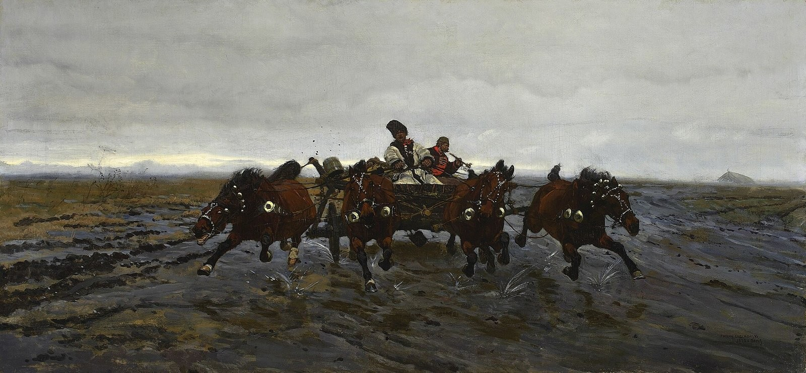
Lektor opisuje obraz w ustalonej kolejności. Nie da się wrócić do fragmentu ani samemu sprawdzić, co jest w rogu płótna.
Wypukła kopia dzieła robiona ręcznie. Jest droga, więc muzea zamawiają ją dla pojedynczych obrazów.
media/demo-czworka.mp4media/aplikacja.mp4Wystarczą telefon i słuchawki. Obrazy są w aplikacji, więc można je oglądać także w domu.
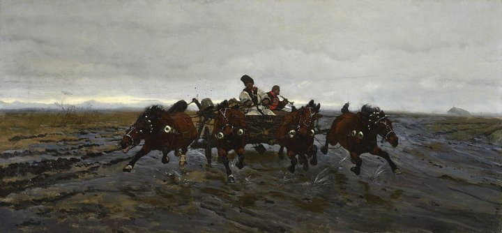
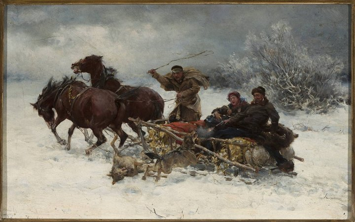
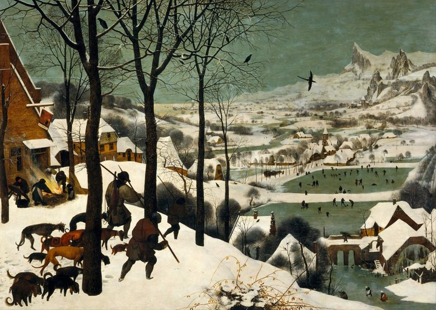
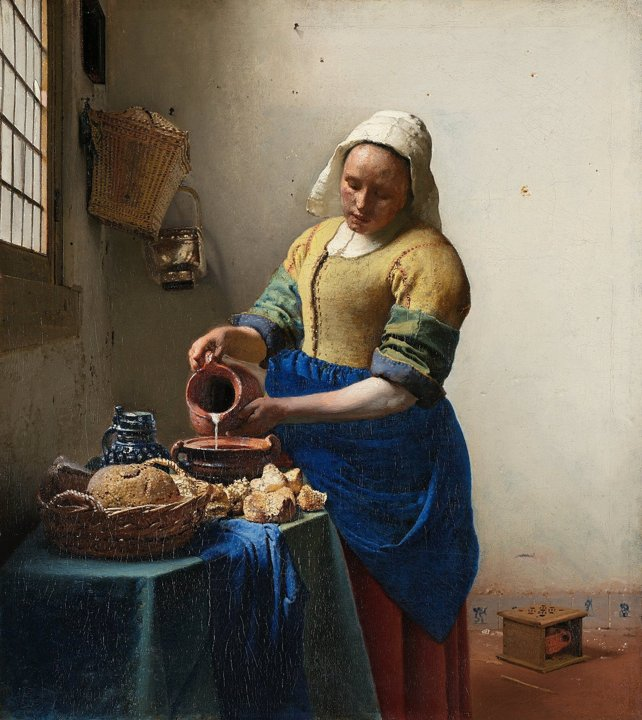
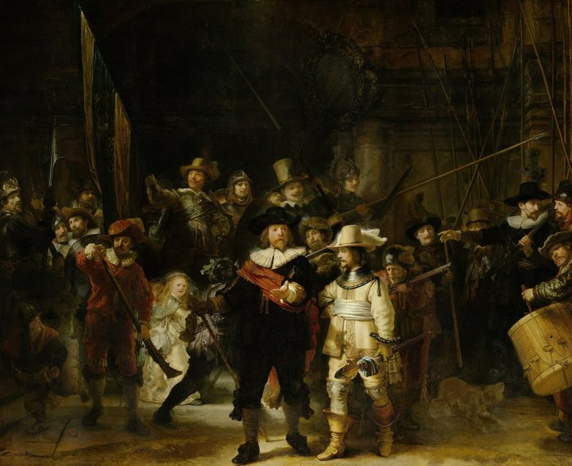
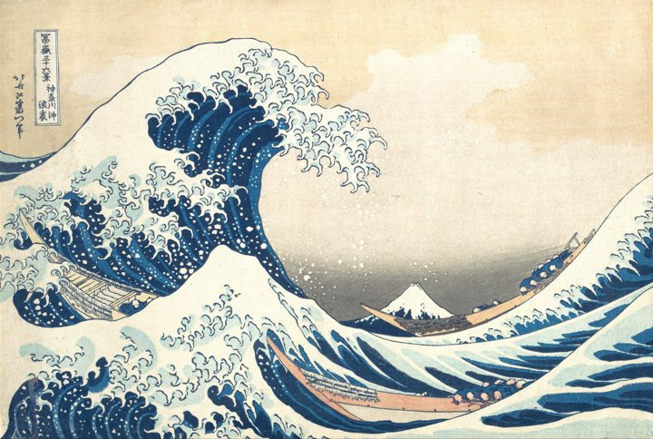
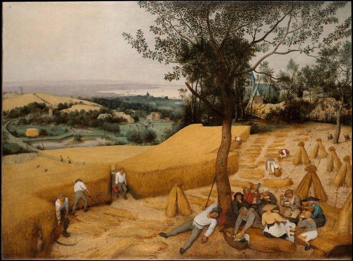
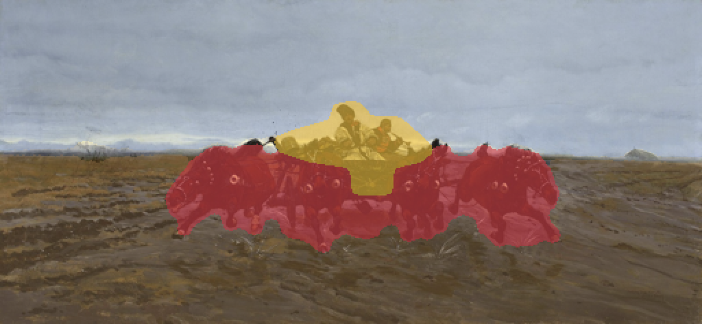
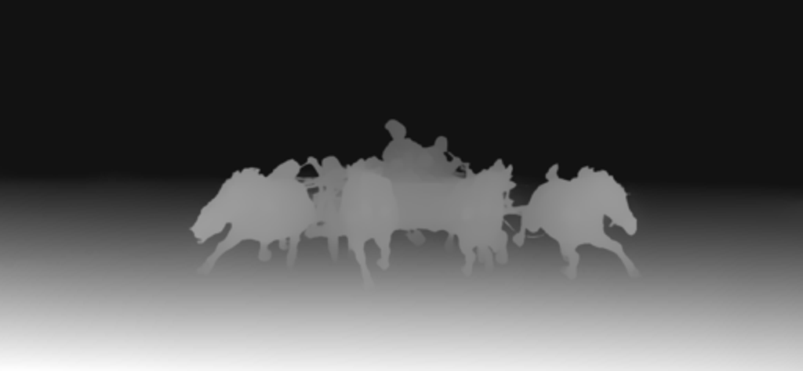
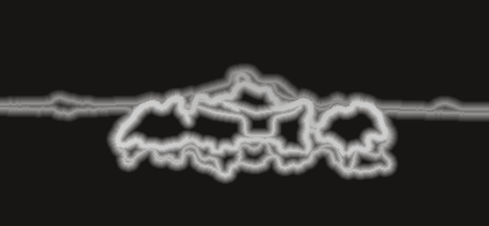
Opisy pisze kurator, nie model. Claude może przygotować szkic, ale zatwierdza człowiek: dziś my, docelowo muzeum.
Rynek nie kończy się na Polsce: aplikacja mówi po polsku i angielsku, a dzieła z domeny publicznej wiszą w muzeach na całym świecie.
Muzea i galerie, z budżetów i grantów na dostępność. Bez zakupu sprzętu: zwiedzający ma własny telefon.
Roczny abonament za kolekcję w aplikacji. Obrazy dodaje pipeline, więc muzeum udostępnia całą galerię, nie jedno dzieło.
Dostępność, którą wykaże w raporcie z ustawy, i zwiedzających, którzy poznają obrazy w domu, przed wizytą i po niej.
Historie obrazów, np. kim był kapitan ze „Straży nocnej”, przydadzą się też widzącym.
Czy zasada „co, nie gdzie” działa poza naszym zespołem.
Pierwsza kolekcja z opisami zatwierdzonymi przez muzeum.
iOS i VoiceOver włączony także podczas oglądania obrazu.
Spróbujcie sami: po prezentacji dajemy wam telefon do ręki.